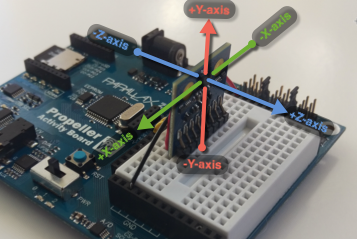
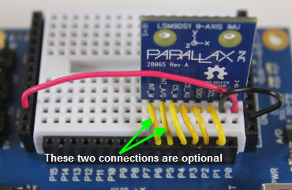

BlocklyProp reference for LSM9DS1 9-AXIS IMU blocks


 Available for Activity Board, FLiP and Other board types. Not available for Badge or Scribbler Robot board types.
Available for Activity Board, FLiP and Other board types. Not available for Badge or Scribbler Robot board types.
The LSM9DS1 9-axis IMU (#28065) measures acceleration, rotation, and magnetic field strength along three perpendicular axes, shown and labeled in the image below:

IMU initialize
The IMU initialize block sets up the communication between the Propeller chip and the compass module. If you forget to use this block, a triangle warning icon will appear on other IMU blocks as a reminder:
Set each dropdown to match the Propeller I/O pins connected to the IMU's SCL, SDIO, CS_AG, and CS_M pins. It is not necessary to connect the INT_A/G or INT_M pins, however, they may be read using a check PIN block if they are connected. I/O pins available will vary by board type.

IMU calibrate magnetometer
The IMU calibrate magnetometer block is used to calibrate the magnetometer on the IMU module.
Use this block immediately after the IMU initialize block. Hold the IMU (or your project that includes the IMU) flat but in a space with enough room to rotate it around. Once the calibration has started, if you are using the ActivityBoard or FLiP, the P26 and P27 LEDs will turn on. You will need to slowly rotate your project around each of the IMU's 3 axes. Once you do, the LEDs will turn off, indicating that the calibration was successful and that the calibration values were saved into the IMU module.
You do not need to repeat the calibration again unless your environment (such as moving your project into or out of a building) or your location changes.
IMU read
The IMU read block stores the current accelerometer, gyroscope, or magnetometer measurements from each of the 3 axes into the specified variables. The Accelerometer measurements are in g-100ths. This means that a measurement of 1 g (1 Earth gravity) of acceleration will read as +100 in one direction or -100 in the opposite direction. Gyroscope measurements are in hundreths of degrees of rotation per second (DPS-100ths). Magnetometer measurements are in gauss-100ths.
IMU tilt
The IMU tilt block stores the current tilt angles measured by the IMU's accelerometer, measured in degrees as an integer, ranging from -180 to 180. You must specify the axis that is pointing up/down (vertically) to ensure that your measurements are correct. The tilt of the remaining to axes are then stored in the variables specified by their respective drop-down menus.
IMU heading
The IMU heading block stores the current unadjusted heading measured by the IMU's magnetometer, in degrees as an integer, ranging from 0 to 359. You must specify which axes are pointed in which directions relative to the observer for the code to correctly resolve the compass heading.
Calibrate your IMU's magnetometer before using the IMU heading block. You may also need to re-calibrate it if your enviroment or location changes from the last time it was calibrated.